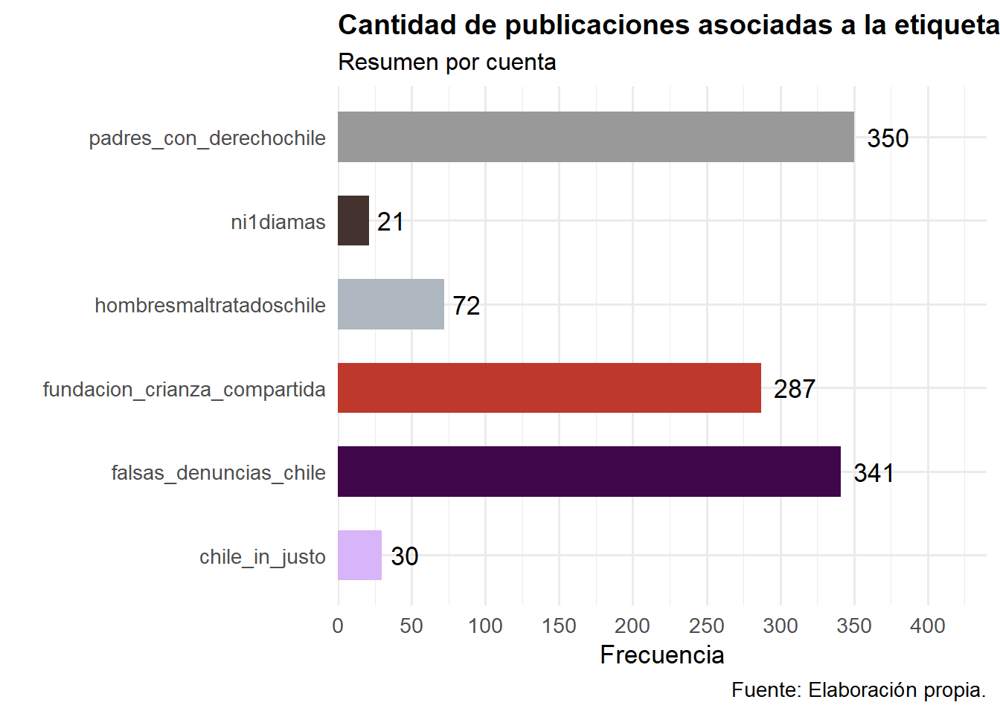
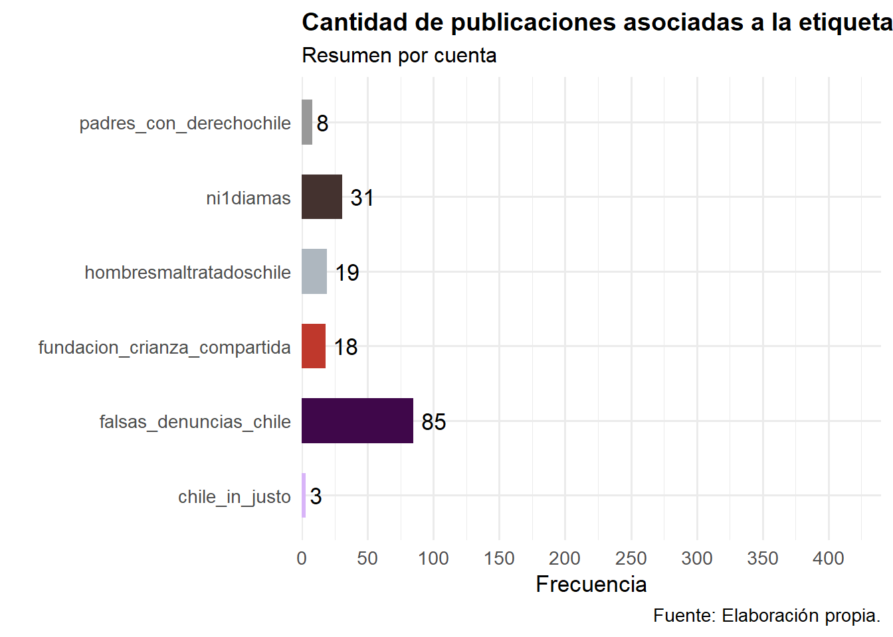
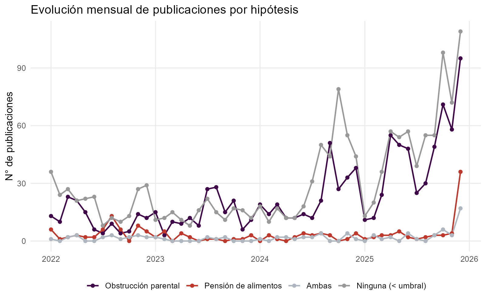

Análisis nivel 1: caracterización general
Método deductivo
Se observa la probabilidad de asociarse a cada tematica.
El funcionamiento es a partir de un Natural Language Inference (NLI), que trabaja desde el testeo de hipótesis propio de la estadística inferencial. Se construye una hipótesis para cada etiqueta, de modo que la hipotesis refiere a la existencia de una relación entre el texto y la tematica.
Para el caso de nuestras dos temáticas sería:
El texto es la descripción de la publicación.
En ese sentido, el modelo calcula la probabilidad de implicancia (entailment) y contradicción con la hipótesis (etiqueta) para cada descripción.
Para la asignación de etiquetas no se fuerza a que las descripciones tributen a una sola temática, sino que también existe la posibilidad de que tirbute a ambas. Esto es posible debido a que cada hipotesis se evalua en su propio par indepdiente por descripción y no a nivel de todas las descripciones (a ello se le entiende como zero-shot classification).
Lo que nos interesa y verá reflejado a continuación son las probabilidades de entailment para cada temática.
1. Tema: Obstrucción parental
Detalle de publicaciones: obstrucción parental por año
Se muestran solo las publicaciones etiquetadas como obstruccion_parental (probabilidad ≥ umbral), ordenadas por probabilidad de mayor a menor dentro de cada panel. Cada pestaña corresponde a un año.
Detalle de publicaciones: obstrucción parental por cuenta
Mismas publicaciones que arriba, pero organizadas con una pestaña por cuenta en vez de por año (incluye todos los años disponibles).
Top 10: publicaciones más representativas de obstrucción parental
Las 10 publicaciones con mayor probabilidad de asociarse a la hipótesis de obstrucción parental.
2. Tema: Pensión de alimentos

Detalle de publicaciones: pensión de alimentos por año
Se muestran solo las publicaciones etiquetadas como pension_alimentos (probabilidad ≥ umbral), ordenadas por probabilidad de mayor a menor dentro de cada panel. Cada pestaña corresponde a un año.
Detalle de publicaciones: pensión de alimentos por cuenta
Mismas publicaciones que arriba, pero organizadas con una pestaña por cuenta en vez de por año (incluye todos los años disponibles).
Top 10: publicaciones más representativas de pensión de alimentos
Las 10 publicaciones con mayor probabilidad de asociarse a la hipótesis de pensión de alimentos.
3. Evolución mensual
